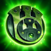
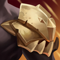
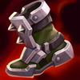
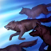

Tanque
/
Soporte
Dificultad Baja
HABILIDADES


PASIVA • BARRERA DE MANÁ
Cuando se queda con poca vida, Blitzcrank obtiene un escudo según su maná.
1 • AGARRE COHETE
Blitzcrank extiende su mano derecha para sujetar a un oponente en su trayectoria, lo que inflige daño y lo arrastra hacia él.
2 • SOBREMARCHA
Blitzcrank se sobrecarga para aumentar drásticamente su velocidad de movimiento y de ataque. Queda temporalmente ralentizado después de que el efecto termina.
3 • PUÑO DE PODER
Blitzcrank carga su puño para que su siguiente ataque realice golpes críticos y lance al objetivo por el aire.
DEFINITIVA • CAMPO ESTÁTICO
Los enemigos atacados por Blitzcrank quedan marcados y sufren daños de relámpago después de 1 seg. Además, Blitzcrank puede activar esta habilidad para dañar a los enemigos cercanos y silenciarlos brevemente.
CONFIGURACIÓN
OBJETOS
-

Convergencia de Zeke
2700+40 Armadura
+40 Resistencia Mágica
+150 Maná Máximo
+10 Aceleración de Habilidad
MENSAJERO: Lanzar tu definitiva te envuelve en una tormenta de nieve y potencia los ataques de un aliado cercano por 10 seg. Tu tormenta de nieve ralentiza un 20% y los ataques de tu aliado queman a los enemigos, lo que inflige un 30% del daño de ataque como daño mágico adicional a lo largo de 2 seg. (Potencia los ataques del aliado con mayor daño)
PACTO DEL FUEGO CONGELADO: Ralentizar a un enemigo en llamas con tu tormenta hace que inflija 60 de daño mágico por segundo y ralentice un 50% por 3 seg. -

Juramento del Protector
2700+350 Vida Máxima
+40 Armadura
+10 Aceleración de Habilidad
PROTECTOR: Mejora tu guardia cuando estés junto a un campeón aliado. Si tú o tu aliado reciben daño de un campeón, monstruo o torreta, los dos recibirán un 125 de escudo + 20% de Vida adicional + 15% de Poder de Habilidad y 20% de Velocidad de Movimiento durante 1.5 seg. (30 seg de Enfriamiento).
-

Placa del Hombre Muerto
2800+250 Vida Máxima
+50 Armadura
IMPLACABLE: +5% de Velocidad de Movimiento.
IMPULSO: Moverte genera impulso, lo que otorga hasta 50 de Velocidad de Movimiento al llegar a 100 acumulaciones. Atacar elimina todas las acumulaciones de Impulso. Las acumulaciones decaen cuando se afecta la velocidad de movimiento.
GOLPE APLASTANTE: Los ataques infligen hasta 100 de daño mágico adicional según el Impulso consumido. Los ataques cuerpo a cuerpo con el máx. de Impulso ralentizan un 50% durante 1 seg. -

Fuerza de la Naturaleza
2850+350 Vida Máxima
+45 Resistencia Mágica
TORMENTA: +5% de Velocidad de Movimiento.
ABSORBER: Recibir daño de habilidades otorga 6 de Velocidad de Movimiento y 6 de Resistencia Mágica durante 5 seg (se acumula hasta 5 veces por un máximo de 30 de Velocidad de Movmiento y 30 de Resistencia Mágica).
Cada habilidad única otorga 1 acumulación. -

Cota de Espinas
2900+200 Vida Máxima
+75 Armadura
ESPINAS: Recibir un ataque refleja 25 de daño mágico +10 de armadura adicional al atacante e inflige un 40% de Heridad Graves por 3 seg si es un campeón. Inmovilizar campeones enemigos también inflige un 60% de Heridas Graves por 3 seg.
Heridas Graves reduce la efectividad de las curaciones y efectos regenerativos. -

Punteras de Acero Revestidas
1000CALZADO: +40 de Velocidad de Movimiento.
MEJORADO: +15 de Armadura.
BLOQUEADO: Bloquea un 15% del daño de ataques.
CARRERA (ACTIVA): Aumenta la Velocidad de Movimiento un 15% durante 3 seg. Infligir o recibir daño de campeones desactiva los efectos de Carrera. (60 seg de enfriamiento). -

Encantamiento de Relicario
500RELICARIO (ACTIVA): Te otorga a ti y a los campeones aliados cercanos un Escudo contra 70-420 de daño durante 2.5 seg. (60 seg de enfriamiento).
Este efecto se reduce en un 50% si el objetivo se vio afectado por otro Relicario en los últimos 20 seg.
RUNAS Y HECHIZOS
-

Réplica
Tras inmovilizar a un campeón enemigo, obtienes resistencias y después infliges una ráfaga de daño mágico a tu alrededor.
RESISTENCIAS: 35 de Armadura + 60% adicional y 35 de Resistencia Mágica + 60% adicional durante 2.5 seg
DAÑO: 12-110 de daño mágico
ENFRIAMIENTO: 20 seg. -

Fragilidad
Reducir el movimiento de campeones enemigos hará que reciban un 5% de daño adicional durante los siguientes 5 seg.
-

Segundo Aire
Gana 5 de Vida cada 5 seg.
Después de recibir daño de un campeón enemigo, regenera 3(+1.5% de tu Vida faltante) a lo largo de los próximos 10 seg. Este efecto se duplica para campeones cuerpo a cuerpo. -

Cazador de Manada
Obtienes 2% de Velocidad de Movimiento al estar cerca de campeones aliados. Por cada aliado único con el que participes en un derribo, obtienes 50 de oro y el aliado 50 de oro.
-

Ignición
ENFRIAMIENTO: 90 seg.
Prende fuego al campeón enemigo objetivo, lo que inflige 60 de daño verdadero (60-410 basado en nivel) durante 5 seg y le aplica un 60% de Heridas Graves mientras dure el efecto. -

Destello
ENFRIAMIENTO: 150 seg.
Te teletransportas una distancia corta hacia delante o hacia la dirección objetivo.
CÓMO JUGAR BLITZCRANK
Blitzcrank es un campeón de apoyo. ¡Es excelente atrapando a los enemigos con la guardia baja con su Agarre Cohete (primera habilidad) para atraer a un campeón enemigo a todo tu equipo! Esto convierte a Blitzcrank en un gran campeón en todas las etapas del juego, especialmente al principio del juego, porque tienes acceso a Agarre Cohete en el nivel 1 y obtienes un gancho en el enemigo para obtener algunas muertes.